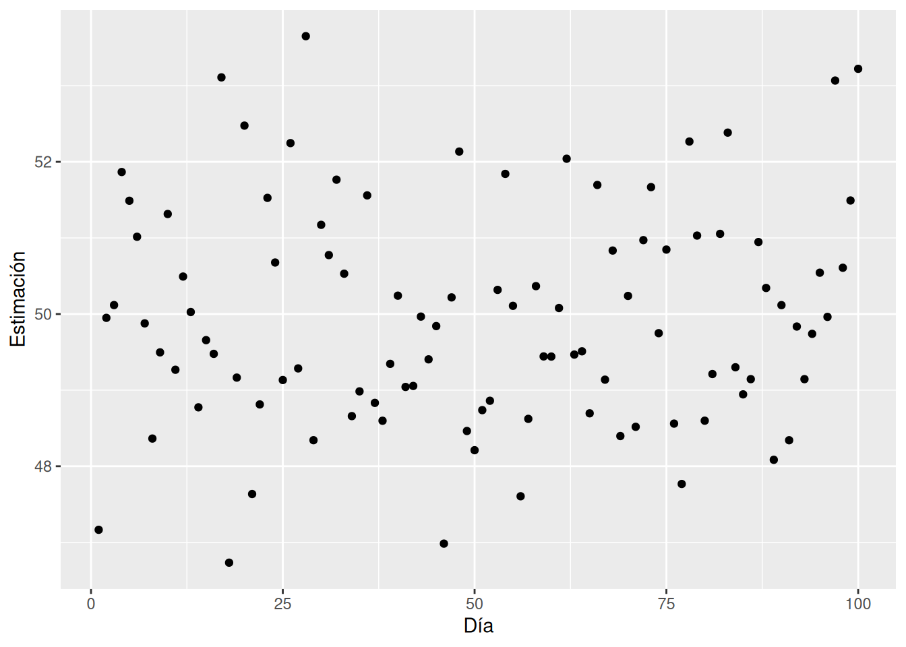
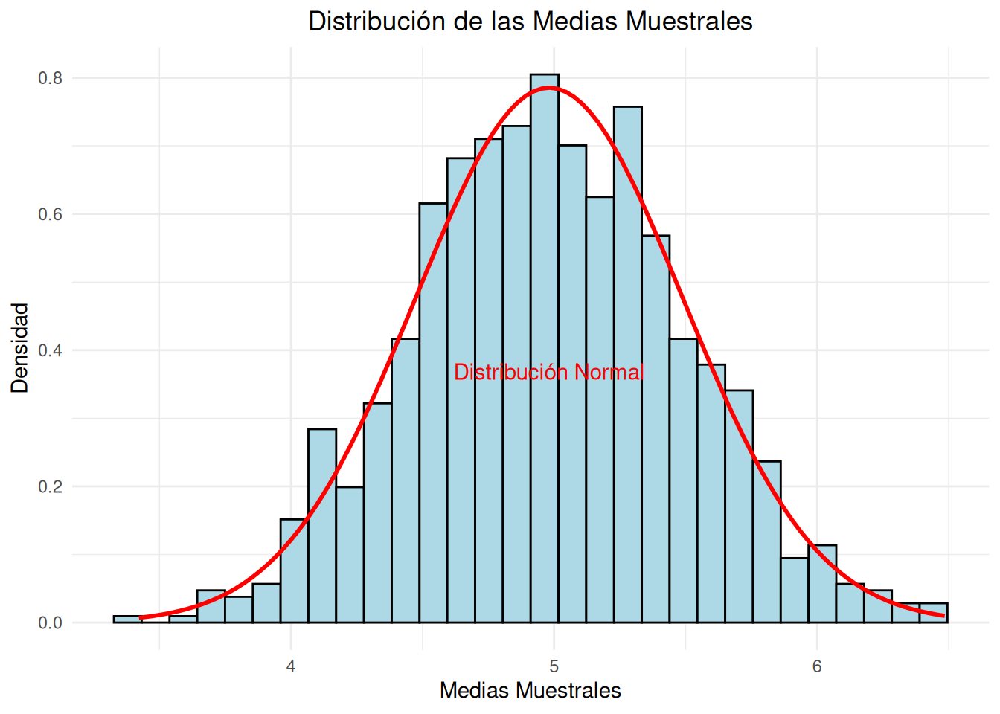

En un mundo cada vez más impulsado por los datos, la capacidad de extraer información útil y tomar decisiones informadas a partir de grandes volúmenes de datos se ha convertido en una habilidad crucial. La Ciencia de Datos, una disciplina que se sitúa en la intersección de la estadística, la informática y el conocimiento específico del dominio, juega un papel central en esta transformación. Dentro de este vasto campo, la inferencia estadística ocupa una posición privilegiada, proporcionando las herramientas necesarias para interpretar datos y hacer predicciones con un fundamento sólido.
Recordemos los aspectos más fundamentales de la Ciencia de Datos. Probablemente, estos aspectos los habrás estudiado en cursos anteriores. Si los tienes claros, puedes saltarte la siguiente sección e ir directamente a la Sección 1.2.
1.1 Ciencia de datos
La última revolución asociada a la IA ha estado enmarcada por el crecimiento en el uso del Aprenzaje Automático dentro del contexto de la ciencia de datos (Kelleher, Mac Namee, y D’arcy 2020).
Ciencia de datos
La ciencia de datos es un área interdisciplinar que abarca un conjunto de principios, problemas, definiciones, algoritmos y procesos cuyo objetivo es extraer conocimiento no obvio y útil a partir de un conjunto de datos.
Pero, ¿qué áreas, métodos y técnicas están implicados en la ciencia de datos?. En primer lugar, presentemos los aspectos teórico y prácticos que sustentan un proyecto real de ciencia de datos. Para ellos recurrimos a la Figura Figura 1.1 (a) que representa el clásico diagrama de la ciencia de datos, como una disciplina en la intersección de tres aspectos fundamentales. Para saber más sobre estos aspectos, desplegad los paneles siguientes:
Matemáticas y Estadística
Conocimientos de Matemáticas, y más concretamente de Estadística, son necesarios para analizar correctamente los datos disponibles. Conceptos como intervalo de confianza, histograma de frecuencias, contraste de hipótesis, espacio de características, métrica, hiperplano separador, error de clasificación, p_valor, etc. han de formar parte del conocimiento de todo científico de datos. Un equipo de ciencia de datos ha de contar con uno o varios expertos en Matemáticas y Estadística. Un buen libro de referencia para dominar los conceptos fundamentales en el ámbito matemático y estadístico que son necesarios en ciencia de datos es (Hastie et al. 2009). Además disponéis de esta versión online (James et al. 2013), similar pero más enfocada al análisis de datos. ¿Lo conocías ya?
Ciencias de la Computación
Estudio del diseño y la arquitectura de los ordenadores y su aplicación en el campo de la ciencia y la tecnología, incluyendo el hardware, el software y las redes de comunicación. Un experto en ciencias de la computación ha de dominar lenguajes de programación como Python, JavaScript, C++, así como los elementos fundamentales que hacen que estos lenguajes funcionen. Algunas referencias útiles para estudiar estos lenguajes son (Hao y Ho 2019), (Osmani 2012) y (Oualline 2003). De igual modo, el científico de datos, ha de conocer ámbitos como los diferentes sistemas operativos, redes, seguridad, algoritmos y arquitectura de ordenadores. Un equipo de ciencia de datos ha de contar con uno o varios expertos en Ciencias de la Computación.
Conocimiento del Dominio
Representa el problema que deseamos estudiar, la organización que lo proporciona y su dominio de aplicación. Existen casos de éxito de la ciencia de datos en prácticamente todos los dominios de interés que podamos mencionar: medicina, ciudades inteligentes, energía, telecomunicaciones, finanzas, seguros, ganadería, agricultura, ciencias sociales, ciberseguridad, etc. Un equipo de ciencia de datos ha de contar con uno o varios expertos en el dominio de aplicación. Estos expertos han de implicarse, fuertemente, en el problema que se quiere resolver. En (Kelleher, Mac Namee, y D’arcy 2020) podéis encontrar ejemplos muy interesantes de cómo la ciencia de datos es aplicada en diferentes dominios.
(a) Fundamentos
(b) Aplicaciones
Figura 1.1: Ciencia de datos
La Figura Figura 1.1 (b) basada en CRISP-DM: “Cross Industry Standard Process for Data Mining” (Wirth y Hipp 2000) presenta el ciclo de vida que todo proyecto de ciencia de datos debería seguir. El inicio del proyecto viene dado por la definición de los objetivos de la organización. A continuación, se recogen y gestionan los datos. Como siguiente paso, se desarrollan y evalúan algoritmos matemáticos sobre los datos. Los resultados de estos modelos se presentan a los expertos en el dominio de aplicación para su posterior integración dentro de la organización. Nótese que el proyecto puede tener varias iteraciones, volviendo a alguna de las etapas anteriores siempre que una etapa posterior así lo requiera. Para saber más detalles sobre estas etapas investigad los paneles siguientes:
Definir objetivos
Entender el negocio es el primer paso en el proceso. Con ayuda de expertos en el dominio, se definen las preguntas a responder con el proyecto (definición de objetivos de la entidad responsable del proyecto). Una vez comprendido el negocio se designa una solución analítica para abordar el problema. En esta etapa las reuniones entre los matemáticos, informáticos y los expertos del dominio (habitualmente trabajadores con grandes conocimiento del problema que se trata de abordar) son frecuentes, necesarias y (casi) nunca, suficientes.
Obtener, preparar y gestionar los datos
Mediante técnicas informáticas, se recopilan y se preparan los datos para su posterior análisis. Podremos hablar de Big Data si los datos se caracterizan por su volumen, variedad o velocidad de procesamiento. Todo proceso de Ciencia de Datos es un proceso de aprendizaje en torno al dato. Las preguntas no surgen de los datos, pero se necesitan datos para responderlas. Es esta la etapa en la que trataremos una parte fundamental de todo el proceso: el análisis exploratorio de datos. Podrás estudiar más sobre cómo preparar los datos para etapas posteriores en el tema 3 de este libro.
Construir un modelo
A través de métodos matemáticos y estadísticos se estudian y analizan los datos, se construyen algoritmos y se aplican modelos. Es la etapa asociada a los modelos de ML que trataremos en los temas 5,7 y 8.
Evaluar y criticar el modelo
Se definen medidas de rendimiento de los modelos que permitan su evaluación tanto por parte del desarrollador como por parte del cliente. Trataremos estas medidas en el tema 6 de nuestro curso.
Visualización y presentación
Se presentan los resultados buscando la comprensión por parte del cliente. No se trata únicamente de aplicar modelos complejos que nadie, más allá del desarrollador o experto matemático, pueda comprender. Muy al contrario, existe en la actualidad una corriente de investigación orientada a construir métodos capaces de ser explicables, junto con otras técnicas para convertir en entendibles los resultados obtenidos por los más complejos algoritmos matemáticos. Hablaremos de explicabilidad de modelos en el último tema del curso.
Despliegue en producción
La solución final se convierte en un producto que podrá ser comercializado. Los modelos de ML se construyen para un propósito dentro de una organización. La integración de este modelo dentro del proceso de la organización debería de ser el último paso del proyecto de ciencia de datos.
En este libro vamos a tratar en profundidad la Inferencia Estadística. Pero, ¿qué relación tiene con la Estadística. Vamos a verlo.
La estadística es la ciencia que se encarga de recolectar, organizar, analizar e interpretar datos para tomar decisiones informadas. Su objetivo principal es comprender y describir la variabilidad inherente en los datos y utilizar esta comprensión para hacer predicciones y tomar decisiones bajo condiciones de incertidumbre. La estadística se divide en dos ramas principales:
Estadística Descriptiva
Se ocupa de resumir y describir las características de un conjunto de datos mediante herramientas gráficas y numéricas, como tablas, gráficos, medias, medianas, varianzas, etc. Su objetivo es proporcionar una visión clara y comprensible de la estructura y características de los datos.
Estadística Inferencial
Utiliza muestras de datos para hacer generalizaciones o inferencias sobre una población más amplia. Involucra el uso de métodos como la estimación de parámetros, pruebas de hipótesis y la construcción de intervalos de confianza. La inferencia estadística permite tomar decisiones y hacer predicciones basadas en datos muestreados.
1.2 Inferencia Estadística
La inferencia estadística se refiere a los métodos y procesos utilizados para extraer conclusiones acerca de una población a partir de una muestra de datos. A diferencia de la mera descripción de datos, la inferencia permite ir más allá de lo observado y hacer generalizaciones, estimaciones y decisiones en presencia de incertidumbre. Esto es fundamental para cualquier análisis de datos que aspire a ser predictivo o que busque comprender fenómenos más amplios que los capturados por los datos disponibles.
Algunos ejemplos del uso de la inteferencia estadística son:
Proporción de votantes a un determinado partido
Proporción de elementos defectuosos en una partida de productos
Proporción de paquetes que llegan tarde
Salario medio
Altura media
Concentración media de un componente
Duración media de un viaje en tren
Espera media entre dos trenes consecutivos
En el contexto de la Ciencia de Datos, la inferencia estadística permite abordar preguntas críticas como:
¿Cuál es la efectividad de un nuevo medicamento?
¿Qué factores influyen en la satisfacción del cliente?
¿Cómo se puede predecir el comportamiento futuro de los mercados financieros?
Estas preguntas no solo requieren una recopilación cuidadosa de datos, sino también un análisis riguroso que tenga en cuenta la variabilidad inherente y las posibles fuentes de error.
La relevancia de la inferencia estadística en la Ciencia de Datos se manifiesta en varias áreas clave. Despliega el panel para averiguarlas.
Áreas clave
Estas son algunas de las áreas clave donde la inferencia estadística cobra valor.
Modelado predictivo: La inferencia estadística es fundamental para construir modelos que pueden predecir resultados futuros basándose en datos históricos. Estos modelos se utilizan en una variedad de campos, desde el marketing hasta la medicina y las finanzas.
Análisis experimental: En muchos dominios, como la biomedicina y la psicología, los experimentos controlados son esenciales para determinar causalidad y no solo correlación. La inferencia estadística proporciona el marco para diseñar estos experimentos y analizar los resultados de manera adecuada.
Decisiones basadas en datos: En el ámbito empresarial y gubernamental, las decisiones basadas en datos permiten optimizar procesos, asignar recursos de manera eficiente y mejorar los servicios. La inferencia estadística permite que estas decisiones sean informadas y respaldadas por evidencia cuantitativa.
Manejo de la incertidumbre: En cualquier análisis de datos, es crucial manejar y comunicar la incertidumbre. La inferencia estadística ofrece métodos para cuantificar esta incertidumbre y tomar decisiones informadas pese a la presencia de variabilidad y error.
1.3 Datos y variables
Los datos son las observaciones o medidas que recopilamos del mundo que nos rodea. Estos pueden ser números, categorías o cualquier tipo de información cuantificable. Llamaremos elementos a los individuos, los sujetos, las observaciones sobre las que se recojen un conjunto de variables.
1.3.1 Datos en R
R incluye en sus librerías numerosos conjuntos de datos. Para acceder a ellos, basta con cargar la librería correspondiente.
species island bill_length_mm bill_depth_mm
Adelie :152 Biscoe :168 Min. :32.10 Min. :13.10
Chinstrap: 68 Dream :124 1st Qu.:39.23 1st Qu.:15.60
Gentoo :124 Torgersen: 52 Median :44.45 Median :17.30
Mean :43.92 Mean :17.15
3rd Qu.:48.50 3rd Qu.:18.70
Max. :59.60 Max. :21.50
NA's :2 NA's :2
flipper_length_mm body_mass_g sex year
Min. :172.0 Min. :2700 female:165 Min. :2007
1st Qu.:190.0 1st Qu.:3550 male :168 1st Qu.:2007
Median :197.0 Median :4050 NA's : 11 Median :2008
Mean :200.9 Mean :4202 Mean :2008
3rd Qu.:213.0 3rd Qu.:4750 3rd Qu.:2009
Max. :231.0 Max. :6300 Max. :2009
NA's :2 NA's :2
Es posible leer datos desde una cuenta de git. Y podemos tener una primera visión de los datos con sentencias comohead que nos enseña las primeras observaciones y sus variables.
longitude latitude housing_median_age total_rooms
Min. :-124.3 Min. :32.54 Min. : 1.00 Min. : 2
1st Qu.:-121.8 1st Qu.:33.93 1st Qu.:18.00 1st Qu.: 1448
Median :-118.5 Median :34.26 Median :29.00 Median : 2127
Mean :-119.6 Mean :35.63 Mean :28.64 Mean : 2636
3rd Qu.:-118.0 3rd Qu.:37.71 3rd Qu.:37.00 3rd Qu.: 3148
Max. :-114.3 Max. :41.95 Max. :52.00 Max. :39320
total_bedrooms population households median_income
Min. : 1.0 Min. : 3 Min. : 1.0 Min. : 0.4999
1st Qu.: 296.0 1st Qu.: 787 1st Qu.: 280.0 1st Qu.: 2.5634
Median : 435.0 Median : 1166 Median : 409.0 Median : 3.5348
Mean : 537.9 Mean : 1425 Mean : 499.5 Mean : 3.8707
3rd Qu.: 647.0 3rd Qu.: 1725 3rd Qu.: 605.0 3rd Qu.: 4.7432
Max. :6445.0 Max. :35682 Max. :6082.0 Max. :15.0001
NA's :207
median_house_value ocean_proximity
Min. : 14999 Length:20640
1st Qu.:119600 Class :character
Median :179700 Mode :character
Mean :206856
3rd Qu.:264725
Max. :500001
La estructura de datos más habitual para realizar análisis de datos es el data frame. ¿Has estudiado este concepto en cursos anteriores?. Los data frame son estructuras de datos de dos dimensiones (como una matriz) que pueden contener datos de diferentes tipos. Normalmente nos referimos a las filas de un data frame como observaciones o registros, mientras que las columnas reciben el nombre de campos, variables, o características.
x y char
1 1 1 A
2 1 2 A
3 1 3 C
4 1 4 A
5 1 5 B
6 1 6 A
7 1 7 B
8 1 8 B
9 1 9 A
10 1 10 A
is.data.frame(datos)
[1] TRUE
Un tibble, o tbl_df, es una actualización del concepto del data frame. Los tibbles son data.frames perezosos. Esto le obliga a enfrentarse a los problemas antes, lo que normalmente conduce a un código más limpio y expresivo. Los tibbles también tienen un método print() mejorado que facilita su uso con grandes conjuntos de datos que contienen objetos complejos.
Es importante que realices algún ejercicio en R, leyendo datos de diferentes fuentes y familiarizándote con las diferentes estructuras de datos que R proporciona.
1.3.2 Tipo de variables
Una variable es una característica o atributo que se pueden observar en los elementos y que puede tomar diferentes valores. Llamaremos valores a los resultados que se pueden observar de la característica en el elemento. Las variables siguen una distribución de probabilidad. Las variables pueden ser de varios tipos:
Cualitativas: También conocidas como categóricas, estas variables describen atributos o cualidades y se dividen en nominales (sin orden específico, como colores) y ordinales (con un orden, como niveles de satisfacción).
Cuantitativas: Estas variables son numéricas y pueden ser discretas (valores contables, como el número de hijos) o continuas (valores dentro de un rango, como la altura o el peso).
Marcas de tiempo o identificadores: Como por ejemplo la fecha y hora de una transacción o el código de un producto o el número de identidad.
En este tema vamos a trabajar con los datos de Bank Marketing del repositorio UCI. En primer lugar debemos comprender el problema. ¿Qué sabes del marketing bancario? En el caso que nos ocupa, los datos están relacionados con campañas de marketing directo (llamadas telefónicas) de una entidad bancaria portuguesa. El objetivo del problema en cuestión es predecir si el cliente suscribirá un depósito a plazo (variable objetivo). Abordaremos este problema en próximos cursos. En este curso nos conformamos con entender los datos y proponer ciertas hipótesis en base a ellos.
Las variables que debemos estudiar son:
Variables de entrada:
# datos del cliente bancario:
edad (variable numérica)
empleo : tipo de empleo (variable categórica con las siguientes categorías: “admin.”, “desconocido”, “desempleado”, “directivo”, “empleada del hogar”, “empresario”, “estudiante”, “obrero”, “autónomo”, “jubilado”, “técnico”, “servicios”)
estado civil : estado civil (variable categórica con categorías: “casado”, “divorciado”, “soltero”; nota: “divorciado” significa divorciado o viudo)
educación (variable categórica con categorías: “desconocida”, “secundaria”, “primaria”, “terciaria”)
impago: ¿tiene un crédito impagado? (variable binaria con dos posibles valores: “sí”, “no”)
saldo: saldo medio anual, en euros (variable numérica)
vivienda: ¿tiene préstamo para vivienda? (variable binaria: “sí”, “no”)
# relacionado con el último contacto de la campaña actual:
contacto: tipo de comunicación del contacto (variable categórica: “desconocido”, “teléfono”, “móvil”)
día: día del mes del último contacto (variable numérica)
mes: mes del año del último contacto (variable categórica: “ene”, “feb”, “mar”, …, “nov”, “dic”)
duración: duración del último contacto, en segundos (variable numérica)
# otros atributos
campaña: número de contactos realizados durante esta campaña y para este cliente (variable numérica, incluye el último contacto)
pdays: número de días transcurridos desde que el cliente fue contactado por última vez en una campaña anterior (variable numérica, -1 significa que el cliente no fue contactado previamente)
previous: número de contactos realizados antes de esta campaña y para este cliente (variable numérica)
poutcome: resultado de la campaña de marketing anterior (variable categórica: “desconocido”, “otro”, “fracaso”, “éxito”)
# Variable de salida (objetivo deseado):
17 - y: ¿ha suscrito el cliente un depósito a plazo? (variable binaria: “sí”, “no”)
Para recordar
A veces (muchas veces) la descripción que encontramos en una primera etapa no coincide al completo con los datos que luego nos entrega el cliente.
En otras ocasiones no se dispone de la descripción de las variables. En ese caso, ¡hay que hacer lo imposible por conseguirla!
# A tibble: 11,162 × 17
age job marital education default balance housing loan contact day
<int> <chr> <chr> <chr> <chr> <int> <chr> <chr> <chr> <int>
1 59 admin. married secondary no 2343 yes no unknown 5
2 56 admin. married secondary no 45 no no unknown 5
3 41 technici… married secondary no 1270 yes no unknown 5
4 55 services married secondary no 2476 yes no unknown 5
5 54 admin. married tertiary no 184 no no unknown 5
6 42 manageme… single tertiary no 0 yes yes unknown 5
7 56 manageme… married tertiary no 830 yes yes unknown 6
8 60 retired divorc… secondary no 545 yes no unknown 6
9 37 technici… married secondary no 1 yes no unknown 6
10 28 services single secondary no 5090 yes no unknown 6
# ℹ 11,152 more rows
# ℹ 7 more variables: month <chr>, duration <int>, campaign <int>, pdays <int>,
# previous <int>, poutcome <chr>, deposit <chr>
Disponemos de más de 10000 observaciones y un total de 17 variables.
Para averiguar qué tipo de variables manejamos, ejecutar:
Identifica el tipo de cada variable y las unidades de medida.
1.3.3 Escalas de medición
Una escala de medición define cómo se cuantifican o categorizan las variables recogidas sobre un conjunto de datos, influyendo en el análisis estadístico aplicable.
Nominal: categorización sin orden inherente. Por ejemplo, el género, la nacionalidad o el tipo de sangre.
Ordinal: categorización con un orden lógico. Por ejemplo, el nivel educativo, o una clasificación de hoteles.
Métrica: medición de diferentes escalas:
Intervalo: sin cero verdadero, por ejemplo la temperatura en Celsius.
Razón: con cero verdadero, por ejemplo los ingresos o la distancia.
En estadística y análisis de datos, es muy común recurrir a conversión entre diferentes escalas de medición. Las más comunes son:
Fechas a categóricas: convertir fechas exactas en mes, día de la semana, etc.
Cuantitativas a cualitativas: crear clases o rangos a partir de datos numéricos. Por ejemplo convertir el nivel de ingresos en “bajo”, “medio” y “alto”.
Ordinales como numéricas: pasar de un orden a unos valores numéricos puede ser peligroso. Esta transformación ha de ser empleada con precaución, especialmente cuando se trabaja con pocos datos (\(<100\)). Ten en cuenta que combinar en índices puede ser más informativo.
Variables calculadas: creación de nuevas variables a partir de las existentes es una práctica muy habitual en análisis de datos. Hay una gran cantidad de situaciones donde esta tarea será muy beneficiosa. Por ejemplo, se crea el Índice de Masa Corporal (IMC) a partir de peso y altura.
1.4 Población y muestra
La población es el conjunto completo de todos los elementos o individuos que se desean estudiar. Puede ser una colección de personas, objetos, eventos o cualquier unidad de observación que sea de interés en un estudio. Por ejemplo, la población podría ser todos los estudiantes de una universidad, todos los árboles en un bosque, o todos los productos fabricados en una planta.
Dado que es a menudo impráctico o imposible estudiar toda la población, se selecciona una muestra, que es un subconjunto de la población. El estudio de las observaciones de una población podría implicar destruir dichas observaciones (vida útil del componente). El coste del estudio de las características de las observaciones podría ser muy elevado (experimentos biológicos). A veces el tamaño de la población es tan elevado (very big data!) que es obligatorio utilizar métodos de muestreo. Eso sí, es importante que la muestra sea representativa para que las conclusiones que se extraen de ella sean válidas para la población completa.
Ejemplo. Sondeo Electoral de 1936
El caso del sondeo electoral de 1936, realizado por la revista “Literary Digest” en Estados Unidos, es un ejemplo clásico que ilustra la importancia de la representatividad de una muestra en la investigación estadística y en particular en la realización de encuestas.
En 1936, la revista “Literary Digest” llevó a cabo un sondeo para predecir el resultado de la elección presidencial entre el candidato demócrata Franklin D. Roosevelt y el candidato republicano Alf Landon. La revista enviaba millones de encuestas a sus lectores y a otras listas de individuos, como propietarios de automóviles y personas que aparecían en directorios telefónicos. En ese año, “Literary Digest” envió unos 10 millones de encuestas y recibió alrededor de 2.4 millones de respuestas, lo que constituía una muestra enorme para los estándares de la época.
La predicción del sondeo fue que Alf Landon ganaría la elección con un margen significativo. Sin embargo, el resultado real fue una victoria aplastante para Franklin D. Roosevelt, quien ganó con más del 60% del voto popular y el 98.5% del voto electoral. Este error de predicción se debió principalmente a problemas relacionados con la representatividad de la muestra.
Problemas de Representatividad
Sesgo de selección: La muestra del sondeo no era representativa de la población general. La lista de encuestados estaba basada en suscriptores de la revista, propietarios de automóviles y personas que aparecían en directorios telefónicos. En la década de 1930, estos grupos eran, en su mayoría, personas de ingresos más altos y de tendencia republicana, que no representaban adecuadamente a la población estadounidense en general, que incluía una proporción significativa de votantes de ingresos más bajos y de tendencia demócrata.
Tasa de respuesta: Aunque el tamaño de la muestra era grande (2.4 millones de respuestas), la tasa de respuesta fue baja en relación al número de encuestas enviadas (10 millones). Esto puede introducir un sesgo adicional, ya que las personas que respondieron pueden no ser representativas de la población objetivo. Es posible que aquellos más inclinados a responder fueran también más inclinados a votar por Landon.
Muestreo no aleatorio: El método de selección de la muestra no era aleatorio. Las listas utilizadas para enviar las encuestas no cubrían todas las demografías de manera equitativa. Un muestreo aleatorio hubiera asegurado que cada individuo de la población tuviera una probabilidad conocida y no nula de ser seleccionado, lo cual es crucial para la representatividad.
La probabilidad juega un papel crucial en el diseño del muestreo y en la inferencia estadística. En el contexto del muestreo, la probabilidad asegura que cada miembro de la población tiene una oportunidad conocida y, generalmente, igual de ser incluido en la muestra. Esto permite que las muestras sean representativas y que los resultados sean generalizables. La teoría de la probabilidad también se utiliza para modelar la incertidumbre y el comportamiento aleatorio inherente en los datos.
Advertencia
Probablemente has estudiado estos conceptos en la asignatura de Probabilidad y Simulación.
Una vez que se ha recolectado una muestra, la estadística descriptiva se utiliza para organizar, resumir y presentar los datos de manera comprensible. Las herramientas de estadística descriptiva incluyen:
Medidas de tendencia central: como la media, mediana y moda, que resumen el centro de los datos.
Medidas de dispersión: como el rango, la varianza y la desviación estándar, que describen la variabilidad de los datos.
Gráficos: como histogramas, gráficos de caja y gráficos de dispersión, que visualizan los datos.
La estadística descriptiva se centra en describir lo que los datos muestran, sin hacer inferencias o generalizaciones sobre la población.
La inferencia estadística utiliza los datos de la muestra para hacer estimaciones, predicciones y generalizaciones sobre la población completa. Esto incluye dos aspectos principales:
Estimación: Utilizar los datos de la muestra para estimar parámetros de la población, como la media o la proporción. Las estimaciones pueden ser puntuales (un solo valor) o por intervalo (un rango de valores con un nivel de confianza asociado).
Contraste de hipótesis: Probar afirmaciones sobre la población utilizando los datos de la muestra. Esto implica formular una hipótesis nula y una hipótesis alternativa, y usar pruebas estadísticas para decidir cuál es más consistente con los datos observados.
La inferencia estadística se basa en la teoría de la probabilidad para evaluar la incertidumbre y la variabilidad en las estimaciones y pruebas.
La Figura 1.2 muestra la relación entre los conceptos de Población, Muestra, Inferencia Estadística, Probabilida y Estadística Descriptiva. Estos conceptos permiten a los estadísticos recolectar datos de manera eficiente, describir los datos recolectados y hacer inferencias significativas y precisas sobre la población a partir de la muestra.
Figura 1.2: La esencia de la Estadística
Existe un principio fundamental en el análisis de datos que podríamos simplificar así:
\[DATOS = MODELO + ERROR\]
Los datos representan la realidad (procesos de negocios, clientes, productos, actividades, fenómenos físicos, etc.) que se quiere comprender, predecir o mejorar.
El modelo es una representación simplificada de la realidad que proponemos para describirla e interpretarla más fácilmente.
El error refleja la diferencia entre nuestra representación simplificada de la realidad (el modelo) y los datos que relamente describen esa realidad de forma precisa.
Buscaremos, especialmente cuando estudiemos Apendizaje Automático, encontrar el modelo que explique los datos minimizando al máximo el error.
1.4.1 Muestreo
El muestreo estadístico es una técnica fundamental en la estadística que permite extraer conclusiones sobre una población basándose en el análisis de una parte más pequeña de dicha población, conocida como muestra. A continuación, presentamos algunas de las principales técnicas de muestreo estadístico. Cada una de estas técnicas tiene sus propias ventajas y limitaciones, y la elección de la técnica adecuada depende del objetivo del estudio, las características de la población y los recursos disponibles.
Muestreo aleatorio simple
En el muestreo aleatorio simple, cada miembro de la población tiene la misma probabilidad de ser seleccionado. Diremos que la muestra es aletoria simple (m.a.s.) cuando empleamos este tipo de muestreo. Se suele realizar utilizando métodos aleatorios, como sorteo, tablas de números aleatorios o generadores de números aleatorios. Este método es simple y fácil de entender, pero puede no ser siempre el más eficiente, especialmente si la población es muy grande. Podemos realizar el muestro con o sin reemplazamiento. Diremos que un muestreo es con reemplazamiento cuando una observación poblacional puede ser elegida varias veces para formar parte de la muestra. La misma observación puede aparecer repetida. Habitualmente se recurre al muestro sin reemplazamiento, donde una observación de la población, una vez elegida para formar parte de la muestra, es eliminada de la población y no puede volver a ser elegida.
La siguiente sentencia de R elige \(5\) observaciones de la base de datos bank mediante un muestreo aleatorio simple.
n=dim(bank)[1] # número de observaciones en la base de datosindices=sample(1:n,size=5,replace=FALSE)indices # indices de las observaciones elegidas
[1] 9871 2846 10505 1818 200
muestra=bank[indices,] # muestra de observaciones
Esta técnica será empleada en la asignatura de Aprendizaje Automático para crear las particiones de entrenamiento, test y validación.
Muestreo sistemático
En el muestreo sistemático, se selecciona un punto de inicio al azar y luego se elige a cada n-ésimo individuo de la lista de la población. Por ejemplo, si se quiere una muestra del 10% de una población de 1000 individuos, se seleccionaría un punto de inicio al azar entre los primeros 10 individuos y luego se seleccionaría cada décimo individuo a partir de ese punto. Este método es más fácil de ejecutar que el muestreo aleatorio simple, pero puede introducir sesgos si hay un patrón en la lista de la población.
Muestreo estratificado
El muestreo estratificado implica dividir la población en subgrupos o estratos homogéneos y luego tomar una muestra aleatoria de cada estrato. Los estratos se forman en base a una característica específica como la edad, el género, el nivel socioeconómico, etc. Este método asegura que todas las subpoblaciones importantes estén representadas en la muestra y puede proporcionar estimaciones más precisas que el muestreo aleatorio simple. En el Aprendizaje Automático la variable elegida será la variable respuesta, o variable objetivo. De este modo, cuando los datos están desequilibrados, es decir, cuando tenemos más observaciones de una clase que de otra en los valores de la variable respuesta, aseguramos que todas los grupos están igualmente representados en la muestra.
Muestreo por conglomerados
En el muestreo por conglomerados, la población se divide en grupos o conglomerados, y se seleccionan algunos de estos conglomerados al azar. Luego, todos (o una muestra de) los individuos dentro de los conglomerados seleccionados se incluyen en la muestra. Este método es útil cuando es difícil o costoso crear una lista completa de la población, pero puede ser menos preciso si los conglomerados no son homogéneos.
Muestreo por cuotas
El muestreo por cuotas es un tipo de muestreo no probabilístico en el que se selecciona una muestra que cumple con ciertas cuotas preestablecidas basadas en características específicas. Por ejemplo, se puede querer que la muestra tenga un cierto número de individuos de diferentes edades o géneros. Aunque este método es práctico y rápido, no permite estimaciones estadísticas precisas de la población porque no todos los individuos tienen la misma probabilidad de ser seleccionados.
Muestreo de bola de nieve
El muestreo de bola de nieve es otra técnica no probabilística, utilizada principalmente cuando es difícil acceder a los miembros de la población. Se empieza con unos pocos individuos conocidos de la población, quienes a su vez refieren a otros individuos, y así sucesivamente. Este método es útil para estudios de poblaciones ocultas o difíciles de alcanzar, como personas sin hogar o usuarios de drogas, pero introduce un alto riesgo de sesgo. También es muy común utilizar este tipo de muestreo cuando se realizan encuestas en redes sociales puesto que, habitualmente, la población objetivo está oculta o es complejo acceder a ella.
Muestreo intencional o dirigido
En el muestreo intencional o dirigido, se seleccionan individuos que cumplen con ciertos criterios específicos de la investigación. Es un método no probabilístico donde la selección se basa en el juicio del investigador. Es útil cuando se busca estudiar casos específicos, pero no permite hacer generalizaciones precisas sobre la población completa.
1.5 Parámetros y estadísticos
Los parámetros de una población son (casi) siempre desconocidos. Son valores teóricos que se definen sobre la población y que son de interés para el investigador. Son sobre los que haremos inferencia. Normalmente se representan con letras griegas.
Diremos que un estadístico (además de una persona que hace estadística) es una función definida sobre los datos de una muestra (valores de una o más variables). En cada muestra serán distintos, debido a la variabilidad inherente a la extracción de una muestra representativa de una población. Los estadísticos siguen una distribución en el muestro y se representa con letras latinas.
Figura 1.3: Parámetros vs. Estadísticos
Es decir, una vez obtenida una muestra, es necesario extraer información útil de la misma. Esto se hace a través de los estadísticos.
Diremos que un estadístico \(T= T(x_1,\ldots,x_n)\) es una función real de la muestra aleatoria \((x_1,\ldots,x_n)\).
Un estadístico es una variable aleatoria, y por lo tanto, tiene asociada una distribución. La ditribución de probabilidad correspondiente a un estadístico se denomina distribución muestral.
Por ejemplo, sea \((X_1,\ldots,X_n)\) una muestra aletoria de una población \(X\) con esperanza \(\mu\) y vaianza \(\sigma^2\). Consideremos los siguientes ejemplos de estadísticos:
Media Muestral (\(\bar{X}\)): Utilizada para estimar la media poblacional. \[
\bar{X}=\frac{1}{n}\sum_{i=1}^nX_i
\]
Varianza Muestral (\(V\)): Utilizada para estimar la varianza poblacional. \[
V=\frac{1}{n}\sum_{i=1}^n(X_i-\bar{X})^2
\]
Cuasivarianza muestral (\(S^2\)) \[
S^2=\frac{1}{n-1}\sum_{i=1}^n(X_i-\bar{X})^2=\frac{1}{n-1}\left [ \sum_{i=1}^nX_i^2-n\bar{X}^2\right]
\] Entonces se tienen las siguientes propiedades:
Supongamos que queremos estudiar una característica de cierta población. Esta característica se representa mediante una variable aleatoria \(X\) y el estudio se centra en su valor medio \(E[X]\). Para ello, se decide tomar una muestra y se obtiene un estadístico, la media muestral, que se utiliza para estimar el valor de \(E[X]\): \[
\bar{X}=\frac{1}{n}\sum_{i=1}^nX_i
\] Fíjate que este estadístico \(\bar{X}\) es una variable aleatoria. Una vez tomada una muestra particular \((x_1,\ldots,x_n)\) de la variable aleatoria \(X\) se obtiene un valor numérico particular para la variable aleatoria \(\bar{X}\): \[
\bar{x}=\frac{1}{n}\sum_{i=1}^nx_i
\]
Para recordar
\[\bar{X}\neq\bar{x}\]
Ejemplo. Diferencia entre parámetro y estadístico
Se quiere estudiar la temperatura de una solución líquida en un laboratorio y estimar el valor medio \(\mu\) (parámetro de la población), que es desconocido. Se supone que la temperatura se puede aproximar mediante una variable aleatoria de la que se desconoce su distribución. Una opción razonable para estimarla sería escoger una muestra de la solución, medir su temperatura, y estimar \(\mu\) mediante el promedio de esa muestra (estadístico muestral): \[ \hat{\mu}=\bar{X}\]. Es importante señalar que podríamos emplear otros estadísticos diferentes.
Supongamos ahora que se toma una muestra de 10 mediciones de temperatura de dicha solución, obteniendo estos valores:
Siendo su valor promedio \(\bar{x}=\) 48.15. Este valor estima el verdadero valor desconocido del parámetro \(\mu\).
Ahora, supongamos que se toma otra muestra de 5 mediciones de temperatura de dicha solución, obteniendo estos valores:
[1] 50.18 43.89 46.18 47.74 46.59
La media de esta otra muestra es \(\bar{x}=\) 46.92 otra estimación del desconocido valor del parámetro \(\mu\).
¿Cuál de las dos estimaciones te parece más fiable? ¿Por qué? ¿Cómo podríamos “asegurar” que nuestro estimador es altamente fiable?
Repetimos el primer experimento \(100\) días consecutivos. Es decir, tomamos \(10\) muestras de tamaño 10 y estimamos, para cada muestra el valor del parámetro \(\mu\) mediante la media muestral. El siguiente gráfico muestra los valores de esas \(100\) muestras:

¿Cuál es, a tu juicio, un buen valor del estimador del parámetro? Supongamos que tu profesor ha simulado estos datos. Es decir, tu profesor conoce realmente el verdadero valor del parámetro. En ese caso, te propone el siguiente reto: Dame dos valores (uno bajo y otro alto) entre los cuales crees que está el verdadero valor que solo yo (el profesor) conozco. ¿Qué valores darías? Te propone un reto mayor: ¿Qué valores darías si quisieras estar seguro al \(100\%\) de acertar? Es decir, que la probabilidad de fallo sea \(0\).
1.6 Estadística paramétrica y no paramétrica
Tal y como hemos visto hasta ahora, el objetivo general de la inferencia es obtener información acerca de la distribución de una variable aleatoria \(X\) mediante la observación de una muestra \((X_1,\ldots,X_n)\). En este curso vamos a tratar con dos tipos de herramientas para realizar inferencia estadística: la estadística paramétrica y la no paramétrica. Veamos sus semejanzas y diferencias:
Estadística Paramétrica
La estadística paramétrica se basa en la suposición de que los datos siguen una distribución conocida, como la distribución normal, binomial, Poisson, etc. Estas suposiciones (o hipótesis) deben ser comprobadas para dar validez a este tipo de pruebas. Los parámetros de estas distribuciones, como la media y la varianza, se utilizan para resumir la información de los datos y realizar inferencias.
Familias paramétricas
Se tiene una variable aleatoria \(X\) cuya distribución se supone perteneciente a una cierta familia paramétrica {\(f_\theta\)} donde \(\theta \in \Theta\).
La distribución de \(X\) es conocida excepto por el valor del parámetro \(\theta\), del cual lo único que se conoce es su rango de posibles valores, \(\Theta\), denominado espacio paramétrico.
Por tanto, el objeto de los métodos paramétricos es obtener información sobre el parámetro de interés mediante la obtención de muestras de la variable aleatoria.
Los métodos paramétricos son más potentes que los no paramétricos (es decir, tienen una mayor probabilidad de detectar un efecto verdadero) si las suposiciones son correctas. Ejemplos de pruebas paramétricas incluyen la prueba t de Student, el análisis de varianza (ANOVA), que estudiaremos en el Capítulo 5 y la regresión lineal que veréis en el segundo cuatrimestre.
Estadística no paramétrica
La estadística no paramétrica no hace suposiciones fuertes sobre la distribución de los datos. Estos métodos son más flexibles y robustos a las violaciones de las suposiciones, pero pueden ser menos potentes si las suposiciones de los métodos paramétricos son verdaderas. Los métodos no paramétricos a menudo se basan en el orden de los datos, en lugar de sus valores exactos. Ejemplos de pruebas no paramétricas incluyen la prueba de Mann-Whitney U, la prueba de Kruskal-Wallis y la prueba de Chi-cuadrado. Tendremos un capítulo (Capítulo 4), dedicado a este tipo de herramientas.
La elección entre métodos paramétricos y no paramétricos depende de la naturaleza de tus datos y de las suposiciones que estés dispuesto a hacer. Si tus datos cumplen con las suposiciones de una prueba paramétrica, esa prueba puede ser la opción más potente. Si no, una prueba no paramétrica puede ser más apropiada.
1.7 Frecuentistas vs Bayesianos
En el campo de la estadística existen dos enfoques diferentes que han de ser comentados, la inferencia clásica (o frecuentista) y la inferencia Bayesiana.
Enfoque Frecuentista
Los frecuentistas interpretan la probabilidad como la frecuencia relativa de un evento en un número infinito de repeticiones del experimento. Se obtienen datos a través de una muestra y con técnicas estadísticas se extrae información de los mismos mediante, los llamados, estimadores. En base a esas estimaciones se toman decisiones en el dominio de aplicación.
Los métodos frecuentistas son ampliamente utilizados y son la base de muchas técnicas estadísticas clásicas. Los parámetros son considerados como valores fijos y desconocidos que se estiman a partir de los datos. Los intervalos de confianza, que veremos más adelante en el Capítulo 3, se interpretan en términos de repetibilidad: si se repite el experimento muchas veces, el intervalo de confianza capturará el verdadero parámetro en un porcentaje dado de las repeticiones. Esta interpretación es un poco extraña para el no iniciado y trataremos de explicarlo en detalle en capítulos posteriores.
Enfoque Bayesiano
La inferencia Bayesiana tiene su fundamento en el teorema de Bayes. El teorema de Bayes, también conocido como regla de Bayes, es un principio fundamental en la teoría de la probabilidad que describe la forma de actualizar las probabilidades de una hipótesis basándose en nueva evidencia o información. Fue formulado por el matemático británico Thomas Bayes en el siglo XVIII. Es posible que hayas estudiado este teorema en asignaturas anteriores del grado. En cualquier caso, es sencillo y dice así:
\[
P(A|B) = \frac{P(B|A) \cdot P(A)}{P(B)}
\]
donde:
\(P(A|B)\) es la probabilidad de que ocurra el evento \(A\) dado que ha ocurrido el evento \(B\). Esta es conocida como la probabilidad a posteriori.
\(P(B|A)\) es la probabilidad de que ocurra el evento \(B\) dado que ha ocurrido el evento \(A\). Esta es conocida como la probabilidad verosímil o likelihood.
\(P(A)\) es la probabilidad de que ocurra el evento \(A\) sin ninguna información adicional sobre \(B\). Esta es conocida como la probabilidad a priori o simplemente la probabilidad previa.
\(P(B)\) es la probabilidad de que ocurra el evento \(B\) bajo todas las posibles hipótesis. Esta es conocida como la probabilidad marginal de \(B\).
Vemos que el teorema de Bayes permite actualizar la probabilidad de una hipótesis \(A\) a la luz de nueva evidencia \(B\). Básicamente, proporciona una forma de ajustar nuestras creencias iniciales (probabilidad a priori) en base a la nueva información disponible (evidencia).
Ejemplo. Teorema de Bayes.
Imaginemos que estamos tratando de diagnosticar una enfermedad rara que afecta al \(1\%\) de la población (es decir, \(P(\text{Enfermedad}) = 0.01\)). Ademas, se sabe que existe una prueba para esta enfermedad que es \(99\%\) precisa:
Si una persona tiene la enfermedad, la prueba es positiva el \(99\%\) de las veces, es decir \(P(\text{Positivo}|\text{Enfermedad}) = 0.99\).
Si una persona no tiene la enfermedad, la prueba es negativa el \(99\%\) de las veces \(P(\text{Negativo}|\text{No Enfermedad}) = 0.99\), lo que significa que tiene un \(1\%\) de falsos positivos \(P(\text{Positivo}|\text{No Enfermedad}) = 0.01\).
En este caso, deseamos saber cuál es la probabilidad de que una persona tenga la enfermedad si la prueba ha sido positiva \(P(\text{Enfermedad}|\text{Positivo})\).
Esto significa que, a pesar de que la prueba es bastante precisa, si una persona da positivo en la prueba, la probabilidad de que realmente tenga la enfermedad es aproximadamente \(50\%\), debido a la baja prevalencia de la enfermedad en la población.
El teorema de Bayes es una herramienta poderosa para la toma de decisiones y la inferencia estadística, ya que proporciona un marco formal para actualizar nuestras creencias en base a la evidencia disponible.
Los bayesianos interpretan la probabilidad como una medida de la creencia o confianza en un evento. Esta creencia puede ser actualizada a medida que se obtiene más información. Los parámetros son considerados como variables aleatorias y se describe su incertidumbre a través de distribuciones de probabilidad. Los intervalos de credibilidad bayesianos proporcionan una medida directa de la incertidumbre del parámetro: hay una probabilidad dada de que el verdadero parámetro esté dentro del intervalo de credibilidad. Esto parece tener más lógica que el enfoque frecuentista, pero es menos habitual. Los métodos bayesianos permiten la incorporación directa de conocimientos previos en el análisis a través de la distribución a priori.
Por tanto, la principal diferencia entre los enfoques frecuentista y bayesiano radica en cómo interpretan el concepto de probabilidad. El enfoque frecuentista se basa en frecuencias de eventos, mientras que el enfoque bayesiano se basa en la incertidumbre y la actualización de las creencias.
1.8 Notación
A lo largo de este libro vamos a usar la siguiente notación:
\(X, Y\): Variables
\(i\): Identificador o índice para cada observación o clase
\(x_i\): Valor que toma la variable \(X\) en la observación \(i\)
\(c_i\): Marca de clase en datos agrupados
\(n\): Número total de observaciones
\(k\): Número de clases
\(n_i\): Número de observaciones en la clase \(i\)
\(\bar{x}\): Media muestral de la variable \(X\)
\(s^2\): Varianza muestral de la variable \(X\)
\(s\): Desviación típica muestral de la variable \(X\)
\(\mu\): Media poblacional
\(\sigma^2\): Varianza poblacional
\(\hat{[\cdot]}\): Simboliza un estimador de \(\cdot\). Por ejemplo, \(s = \hat{\sigma}\) quiere decir que la desviación típica muestral \(s\) es un estimador de la desviación típica poblacional \(\sigma\).
1.9 Resúmenes gráficos y numéricos útiles en la inferencia estadística
1.9.1 Métodos numéricos
Tal y como hemos indicado anteriormente, los métodos numéricos de inferencia estadística son técnicas y procedimientos utilizados para analizar datos y hacer inferencias sobre una población a partir de una muestra. Estos métodos se apoyan en herramientas matemáticas y computacionales para estimar parámetros, evaluar hipótesis y tomar decisiones informadas. A continuación, se describen los principales métodos numéricos en la inferencia estadística. No tienes que aprenderlos ahora puesto que vamos a trabajar con estos métodos a lo largo de todo el curso. Los veremos con mayor detalle en los próximos capítulos.
Estimación puntual
La estimación puntual implica el uso de un solo valor estadístico de la muestra para estimar un parámetro de la población.
Media Muestral (\(\bar{x}\)): Utilizada para estimar la media poblacional (\(\mu\)).
Proporción Muestral (\(\hat{p}\)): Utilizada para estimar la proporción poblacional (\(p\)).
Varianza Muestral (\(s^2\)): Utilizada para estimar la varianza poblacional (\(\sigma^2\)).
Estimación por intervalo
La estimación por intervalo proporciona un rango de valores dentro del cual se espera que se encuentre el parámetro poblacional con un cierto nivel de confianza.
Intervalo de confianza para la media:
Para muestras grandes (\(n \ge 30\)): \(\bar{x} \pm Z_{\alpha/2} \left(\frac{\sigma}{\sqrt{n}}\right )\)
Para muestras pequeñas (\(n < 30\)) y cuando la distribución es normal: \(\bar{x} \pm t_{\alpha/2, n-1} \left(\frac{s}{\sqrt{n}}\right)\)
Intervalo de confianza para la proporción: \(\hat{p} \pm Z_{\alpha/2} \sqrt{\frac{\hat{p}(1-\hat{p})}{n}}\)
Intervalo de confianza para la varianza: \(\left( \frac{(n-1)s^2}{\chi^2_{\alpha/2, n-1}}, \frac{(n-1)s^2}{\chi^2_{1-\alpha/2, n-1}} \right)\)
Contraste de hipótesis
El contraste de hipótesis es un procedimiento para tomar decisiones sobre los parámetros poblacionales basándose en la evidencia proporcionada por los datos muestrales.
Formulación de hipótesis:
Hipótesis nula (\(H_0\)): Es la afirmación que se desea probar o refutar.
Hipótesis alternativa (\(H_1\)): Es la afirmación que se acepta si se rechaza (\(H_0\)).
Pruebas para la media:
Prueba Z: Utilizada para muestras grandes (\(n \ge 30\)) o cuando se conoce la desviación estándar poblacional (\(\sigma\)).
Prueba t: Utilizada para muestras pequeñas (\(n < 30\)) y cuando no se conoce (\(\sigma\)).
Pruebas para la proporción:
Prueba Z para proporciones: Utilizada para evaluar hipótesis sobre una proporción poblacional.
Pruebas para la Varianza:
Prueba Chi-cuadrado: Utilizada para evaluar hipótesis sobre la varianza poblacional.
Métodos de resampling
Los métodos de resampling, como el bootstrap y el jackknife, son técnicas computacionales utilizadas para estimar la precisión de los estadísticos de la muestra.
Bootstrap: Consiste en tomar múltiples muestras con reemplazo de los datos originales y calcular el estadístico de interés para cada muestra. Esto permite construir una distribución empírica del estadístico y estimar intervalos de confianza.
Jackknife: Involucra excluir sistemáticamente cada observación de la muestra y recalcular el estadístico de interés. Esto proporciona una manera de estimar el sesgo y la varianza del estimador.
Métodos bayesianos
La inferencia bayesiana utiliza la probabilidad subjetiva para actualizar la creencia sobre los parámetros poblacionales basándose en la evidencia muestral.
Teorema de Bayes: \(P( \theta |x) = \frac{P(x | \theta)P( \theta)}{P(x)}\), donde \(P(\theta|x)\) es la distribución a posteriori, \(P(x|\theta)\) es la verosimilitud, \(P(\theta)\) es la distribución a priori y \(P(x)\) es la probabilidad marginal de los datos.
Simulación Monte Carlo Markov Chain (MCMC): Es un método numérico para aproximar distribuciones posteriores complejas.
Pruebas no paramétricas
Cuando no se cumplen los supuestos de normalidad, se utilizan pruebas no paramétricas que no requieren asumir una distribución específica.
Prueba de Wilcoxon: Para comparar medianas entre dos muestras emparejadas.
Prueba de Mann-Whitney: Para comparar medianas entre dos muestras independientes.
Prueba de Kruskal-Wallis: Extensión de la prueba de Mann-Whitney para más de dos grupos.
Prueba de Chi-cuadrado: Para pruebas de independencia y homogeneidad en tablas de contingencia.
1.9.2 Métodos gráficos
A lo largo del curso usaremos numerosos métodos gráficos para explorar los datos dentro del contexto de la inferencia estadística. Algunas de los métodos básicos son:
Histogramas
Gráficos de barras que muestran la distribución de frecuencias de datos cuantitativos.
Gráficos de caja (boxplots)
Muestran la mediana, los cuartiles y los posibles valores atípicos.
Gráficos de dispersión (scatterplots)
Utilizados para observar la relación entre dos variables cuantitativas.
1.10 Teorema Central del Límite
El Teorema Central del Límite (TCL) es uno de los principios más fundamentales en la estadística y la probabilidad. Establece que, bajo ciertas condiciones, la distribución de la suma (o el promedio) de un gran número de variables aleatorias independientes e identicamente distribuidas tiende a seguir una distribución Normal, independientemente de la distribución original de las variables.
Formalmente, el TCL establece que si, \(X_1,X_2,\ldots,X_n\) son variables aleatorias independientes e idénticamente distribuidas, con media \(\mu\) y varianza \(\sigma^2<\infty\), entonces, para \(n\) suficientemente grande se verifica:
\[\bar{X} \approx N \left ( \mu,\frac{\sigma^2}{n}\right )\] Este resultado es válido tanto para variables discretas como continuas, sean simétricas o asimétricas, unimodales o multimodales.
Para recordar
El Teorema Central del Límite asegura que con muestas suficientemente grandes se pueden utilizar estimaciones basadas en la distribución Normal independientemente del tipo de distribución que siga la variable que nos interesa.
Ejemplo. Teorema Central del Límite
Acabamos de ver que el TCL establece que, para una gran cantidad de muestras aleatorias tomadas de una población con una distribución cualquiera (con una media y una varianza finitas), la distribución de las medias muestrales tiende a ser Normal, independientemente de la forma de la distribución original.
Aquí tienes un ejemplo en R que ilustra el Teorema Central del Límite. Vamos a tomar muestras de una distribución no normal (por ejemplo, una distribución uniforme). Calcularemos las medias de estas muestras y observaremos cómo las medias muestrales se aproximan a una distribución normal.
# Configuraciones inicialesset.seed(123) # Fijamos la semilla para reproducibilidadn_samples <-1000# Número de muestrassample_size <-30# Tamaño de cada muestra# Generamos las muestras de una distribución uniformesample_means <-numeric(n_samples)for (i in1:n_samples) { sample <-runif(sample_size, min =0, max =10) sample_means[i] <-mean(sample)}# Crear un data frame con las medias muestralesdata <-data.frame(sample_means)# Graficamos el histograma de las medias muestrales utilizando ggplot2ggplot(data, aes(x = sample_means)) +geom_histogram(aes(y = ..density..), bins =30, fill ="lightblue", color ="black") +stat_function(fun = dnorm, args =list(mean =mean(sample_means), sd =sd(sample_means)),color ="red", size =1) +labs(title ="Distribución de las Medias Muestrales",x ="Medias Muestrales", y ="Densidad") +theme_minimal() +theme(plot.title =element_text(hjust =0.5)) +annotate("text", x =mean(sample_means), y =max(density(sample_means)$y) /2,label ="Distribución Normal", color ="red")

Para visualizar el resultado, graficamos un histograma de las medias muestrales. Luego, superponemos una curva de densidad de una distribución normal con la misma media y desviación estándar que las medias muestrales para observar cómo se ajusta a una distribución normal.
El histograma de las medias muestrales se aproxima a una distribución normal, a pesar de que las muestras originales provienen de una distribución uniforme.
Hao, Jiangang, y Tin Kam Ho. 2019. «Machine learning made easy: a review of scikit-learn package in python programming language». Journal of Educational and Behavioral Statistics 44 (3): 348-61.
Hastie, Trevor, Robert Tibshirani, Jerome H Friedman, y Jerome H Friedman. 2009. The elements of statistical learning: data mining, inference, and prediction. Vol. 2. Springer.
James, Gareth, Daniela Witten, Trevor Hastie, Robert Tibshirani, et al. 2013. An introduction to statistical learning. Vol. 112. Springer.
Kelleher, John D, Brian Mac Namee, y Aoife D’arcy. 2020. Fundamentals of machine learning for predictive data analytics: algorithms, worked examples, and case studies. MIT press.
Osmani, Addy. 2012. Learning JavaScript Design Patterns: A JavaScript and jQuery Developer’s Guide. " O’Reilly Media, Inc.".
Oualline, Steve. 2003. Practical C++ programming. " O’Reilly Media, Inc.".
Wirth, Rüdiger, y Jochen Hipp. 2000. «CRISP-DM: Towards a standard process model for data mining». En Proceedings of the 4th international conference on the practical applications of knowledge discovery and data mining, 1:29-39. Manchester.